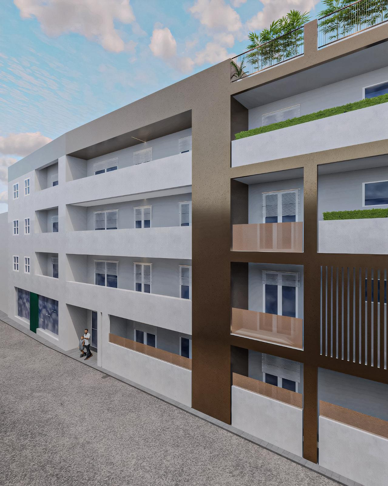
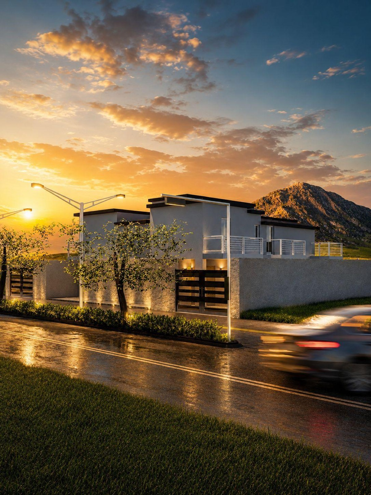
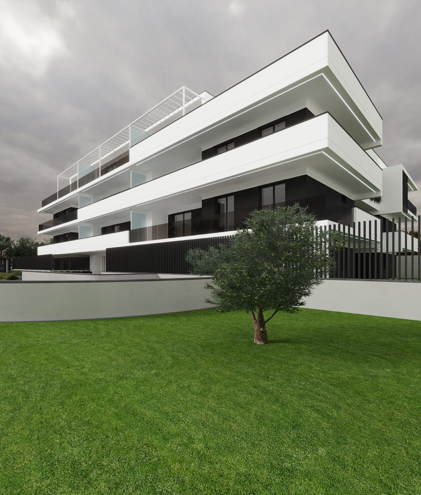
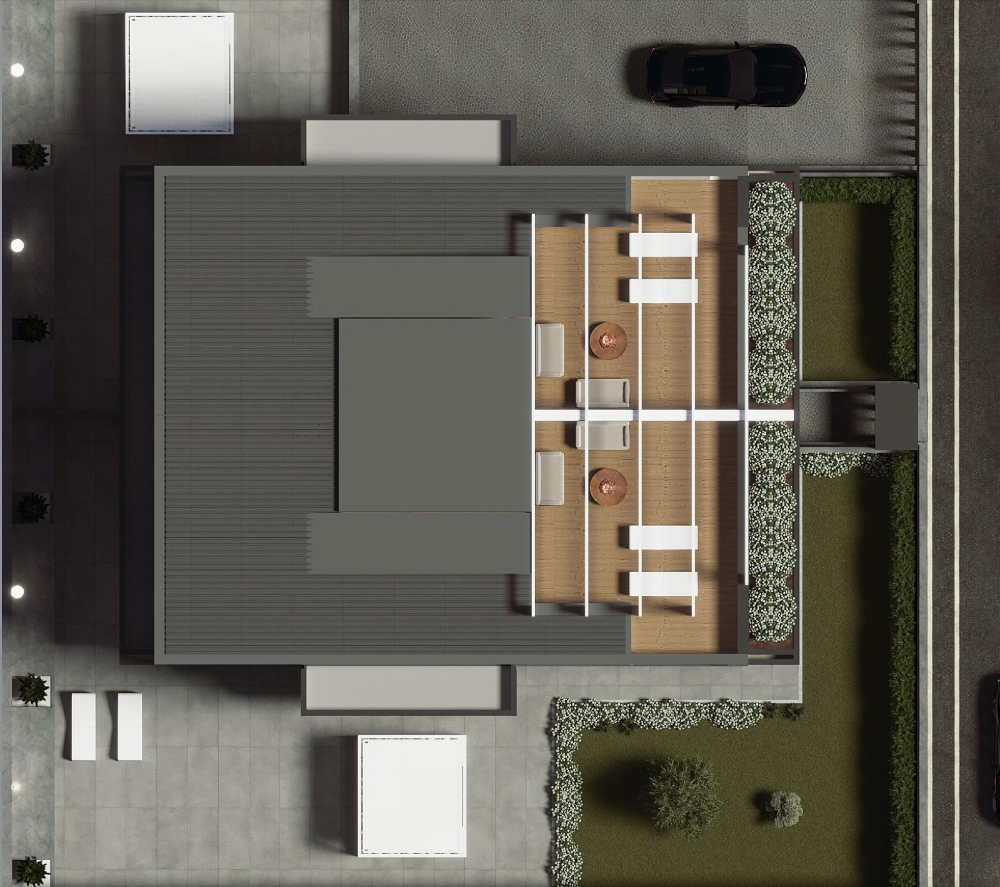

[ 1 ]
40 ANNI DI
CANTIERI
0%


Costruito per restare
40 ANNI DI
CANTIERI
[ SCORRI ]
VIA TORRE · IN COSTRUZIONE
01 · L'ARTE DI COSTRUIRE
Da quarant'anni [DA CONFERMARE] Salzillo Costruzioni lavora a Marcianise e in provincia di Caserta: cemento armato, murature, finiture. Direzione dei lavori interna, un solo referente per tutto il cantiere e un'idea semplice — si costruisce una volta sola, e si costruisce bene.
[ 02 ]STRUTTURA
Strutture in cemento armato e murature portanti, calcolate e seguite in prima persona.
Nessun passaggio delegato: la direzione dei lavori resta dentro l'impresa, dal getto delle fondamenta all'ultimo solaio.
[ 03 ]FINITURE
La finitura è ciò che si vede ogni giorno per decenni: intonaci, rivestimenti, serramenti, impianti.
Scelti per invecchiare bene. È la parte del lavoro che protegge tutto il resto.

[ 1 ]
[ 2 ]
[ 3 ]
[ 4 ]CANTIERI/NUOVE COSTRUZIONI
CANTIERI/RISTRUTTURAZIONI
PERCHE' SALZILLO
Chi calcola e chi costruisce sono la stessa impresa: nessun passaggio di mano.
Maestranze fisse, non catene di subappalti: la qualità non si diluisce.
Dal preventivo alla consegna parli sempre con la stessa persona.
Edifici consegnati decenni fa che stanno ancora lì, dritti. [DA CONFERMARE: anno di fondazione]
Sbancamenti, muri di sostegno, sottofondazioni.
Adeguamenti statici e antisismici.
SERVIZI & CERTIFICAZIONI
Palazzine e villette chiavi in mano.
Locali e capannoni su misura.
Rifacimenti integrali di unità e condomini.
Fondazioni, telai, solai in opera.
Categorie e classifiche da confermare.
Eventuali certificazioni di sistema.
LA STORIA · DAL 19— [DA CONFERMARE]
La fondazione: i primi cantieri a Marcianise. [DA CONFERMARE]
La squadra cresce: prime palazzine residenziali. [DA CONFERMARE]
Il passaggio di generazione dentro la famiglia. [DA CONFERMARE]
Cantieri su tutta la provincia di Caserta. [DA CONFERMARE]
Via Torre in costruzione, e i prossimi progetti.
SEDE
Marcianise (CE)
[DA CONFERMARE: via e civico]
CONTATTI
[DA CONFERMARE: telefono]
[DA CONFERMARE: email]